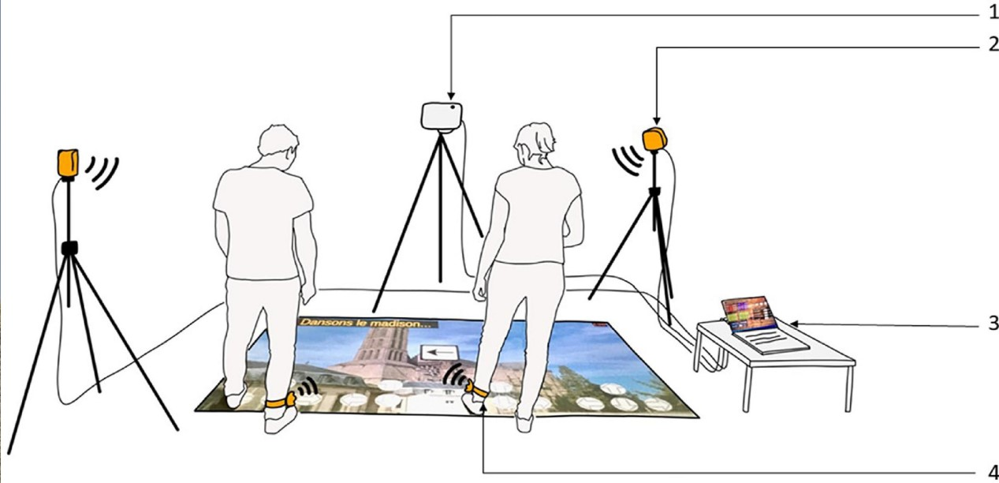

////////////////////////////////////////////////
INCOME Research Project
/////////////////////////////////////////////

From 2019 to 2022, we conceptualized, developed, and evaluated the efficiency of a personalized exergame on the cognitive-motor abilities of seniors. This project was part of a doctoral thesis, realised at the Universite de Limoges under CIFRE partnership with the Limoges city hall (https://tel.archives-ouvertes.fr/tel-03715392). The intervention was conducted in 3 different centers, with the help of 3 animators and several students. All together, we found that our exergame was efficient for enhancing cognitive and maintaining motor functions in older adults. Most importantly, we showed that a tailor solution was enjoyed by all users: players and animators. Theses results were even more relevent because they were found during the COVID19 pandemic and its cortege of lockdowns.
This research focused on the impact of adapted physical activities based on the concept of cognitive-motor interference, using an active video game (exergame) as a medium, on various motor, cognitive, and psychosocial factors related to the risk of falls in seniors.
The first step of this work was to thoroughly understand the research topic: what is known, what is not known, and what is debated. Various literature reviews aimed to determine the effectiveness of dual-task training and exergames on different functions in seniors were realized (https://doi.org/10.1016/j.neucli.2020.10.010 and https://doi.org/10.1016/j.arr.2020.101135 amongst other).
The second step involved the implementation of the trial and the publication of the research protocol. This approach ensures that nothing in the protocol, outcome criteria, or statistical analysis plan is modified post hoc to favor positive observations. This enhances the intrinsic methodological quality of the trial and ensures better validity (https://doi.org/10.52057/erj.v2i1.8).
Once the project was established and validated, a pilot study allowed us to test the setup and collect initial user feedback. Our hypothesis was that the addition of a cognitive task and the adoption of a new gaming tool and its rules would decrease the effective training load. This cross-sectional study showed that participants' heart rates during training were the same, whether they performed our game or a traditional gym workout. Therefore, the physical training load would be equivalent (https://doi.org/10.2196/36126).
A longitudinal study allowed us to show that our exergame led to improvements in various cognitive abilities (mainly executive functions), and the maintenance of motor abilities, quality of life, fear of falling, motivation for physical activity, and physical activity level after 30 minutes of training three times a week for 3 months, conducted by 39 participants over 85 years old (https://doi.org/10.3389/fnagi.2023.1046676).
In a final qualitative study, we learned that our game was appreciated by all its users: players and facilitators alike (https://doi.org/10.25965/TRAHS.3945). We also characterized who our participants were to better understand which target audience we were attractive to or not (https://doi.org/10.4103/2349-7904.351394).
This research project was conducted under an industrial convention (CIFRE) and made possible with the support of the French research agency (ANRT) and the Nouvelle-Aquitaine region. It involved collaboration with the Limoges city hall and municipality (Limoges Metropole), the HAVAE laboratory, Limoges University (Unilim), the methodology center CEBIMER, Limoges University Hospital (CHU de Limoges), the Limoges School of Computer Science (3iL), and the Limoges School of Rehabilitation (ILFOMER). Full acknowledgments and additional resources can be found in the thesis document.
The INCOME project has been widely disseminated both academically and to the general public through various actions, conferences, and workshops. We have also won several grants and awards. Taken together, the benefits for both the academic community and the public have been numerous.